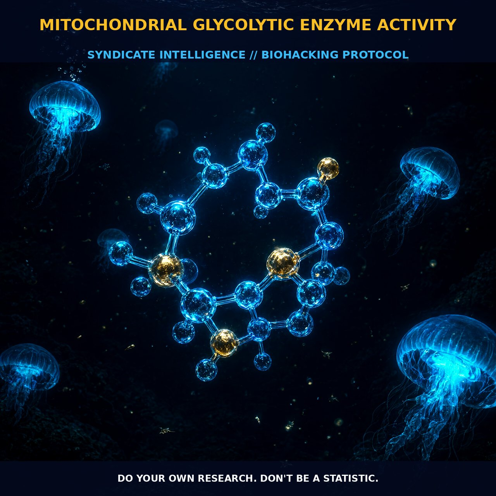

Mitochondrial Interactosome Dynamics: Optimizing Glycolytic Enzyme

1. The Mechanistic Interface of the Mitochondrial Interactosome
Mitochondrial glycolytic enzyme activity represents more than simple energy conversion; it is a critical interface between cellular respiration and rapid ATP generation, governed by the dynamic interplay between the mitochondrial reticulum and cytoskeletal proteins. At the heart of this system lies the large intermembrane protein supercomplex known as the mitochondrial interactosome. Here, hexokinase binds directly to the Voltage-Dependent Anion Channel (VDAC) on the outer membrane.
This structural proximity creates a powerful localized energy microenvironment. By positioning hexokinase-2 immediately adjacent to VDAC, ATP produced via oxidative phosphorylation is guided without delay to active sites of the glycolytic machinery. This strategic routing bypasses the bulk cytosol, ensuring that high-energy demand zones receive fuel with minimal diffusion loss.
2. Mechanosensing and Cytoskeletal Regulation
The regulation of this metabolic process extends far beyond static enzymatic activity to include sophisticated mechanosensing and cytoskeletal organization. Proteins such as β-tubulin interact intimately with VDAC to modulate mitochondrial outer membrane permeability, effectively influencing the cellular switch between oxidative phosphorylation and glycolysis.
Furthermore, factors like FHL2 dock key metabolic enzymes—including M-CK, adenylyate kinase, and phosphofructokinase—to titin. This docking serves as a mechanosensor that triggers hypertrophy and energy transduction in direct response to cellular strain. This tight coupling ensures that energetic interactions between subcellular organelles remain optimized for high-energy demanding cells, linking physical force directly to metabolic output.
3. Biological Leverage Under Stress
The primary biological leverage of this system lies in its ability to maintain efficient energy fluxes under varying physiological stressors, including hypoxia and inflammation. When defense systems such as antioxidants and intracellular energetic buffers are compromised, chronic mitochondrial dysfunction arises from either pathological mtDNA mutations or the accumulation of reactive oxygen species (ROS) and reactive nitrogen species (NOS). These reactive species damage mitochondrial DNA and disrupt membrane fluidity, leading to an overexpression that further impairs the electron transport chain and ATPase function.
Optimizing glycolytic enzyme activity offers a robust pathway to mitigate these dysfunctions by enhancing phosphotransfer kinases and stabilizing the cytoskeletal architecture. By supporting the interaction between hexokinase and VDAC, cells sustain higher rates of glycolysis even when oxidative metabolism is strained—a mechanism notably observed in pathological conditions like the Warburg Effect. This metabolic flexibility allows tissues to counteract energy stress by increasing lipid droplet-mitochondria tethering for beta-oxidation or managing lactate and ammonium accumulation.
4. Tactical Implementation: Coenzyme Q and Creatine
To leverage this system, one must consider agents that support mitochondrial membrane fluidity and enzyme activity without forcing extreme metabolic shifts. Coenzyme Q plays a pivotal role in the mobility of redox components within the inner mitochondrial membrane. Supplementation with ubiquinone supports these kinetic behaviors, ensuring that lateral diffusion of components remains unhindered and that enzyme binding to the mitochondrial fraction functions optimally for sustained ATP production.
Creatine serves as a fundamental ergogenic aid by interacting with cyclocreatine and other derivatives to modulate this glycolytic balance. It acts not only as an energetic buffer but also potentially as an antioxidant, helping to reduce the glycolytic rate in tissues prone to excessive acidosis and ROS generation. For practical implementation, maintaining a steady state of creatine supports the myocyte’s ability to manage ATP hydrolysis during actin polymerization and dissociation, requiring up to half of cellular energy during periods of structural reorganization like myoblast fusion.
Prostar Life Hack
To maximize glycolytic efficiency during high-intensity exertion or metabolic stress, combine ubiquinone supplementation for membrane fluidity with steady-state creatine loading. This dual approach stabilizes the hexokinase-VDAC interaction and buffers cytosolic acidosis, ensuring your cells utilize localized energy microenvironments rather than relying on slower bulk diffusion.
Prostar Life Hack
To maximize glycolytic efficiency during high-intensity exertion or metabolic stress, combine ubiquinone supplementation for membrane fluidity with steady-state creatine loading. This dual approach stabilizes the hexokinase-VDAC interaction and buffers cytosolic acidosis, ensuring your cells utilize localized energy microenvironments rather than relying on slower bulk diffusion.
[ AUTHOR: LEAD TECHNICAL RESEARCHER ]
[FRESH ON CHAIN: 8ce0d9c84147f300... ]